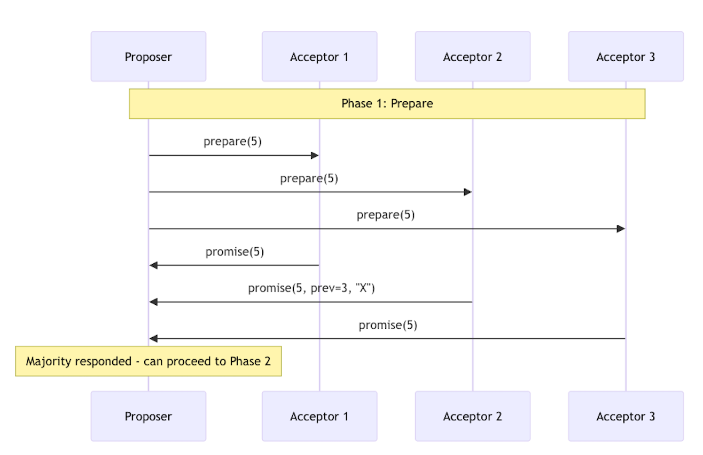
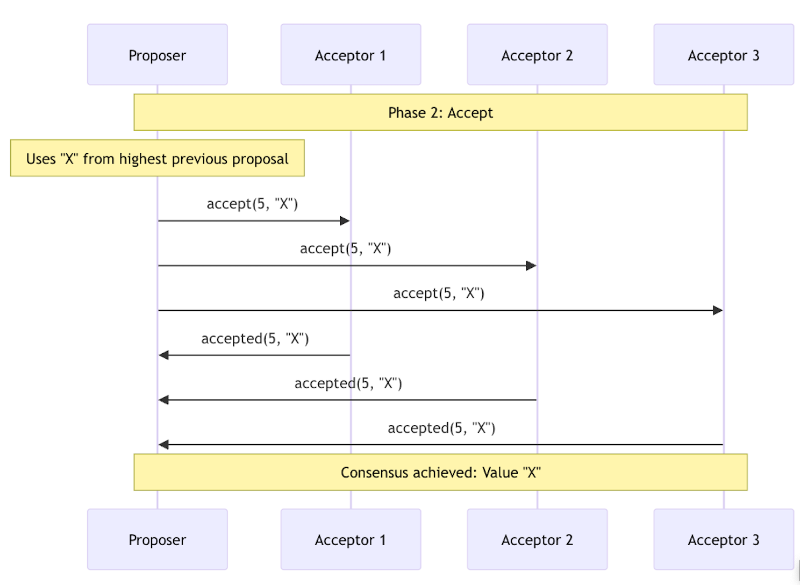
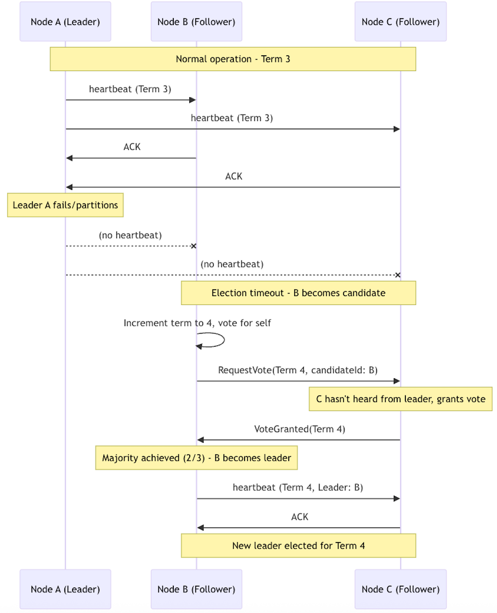
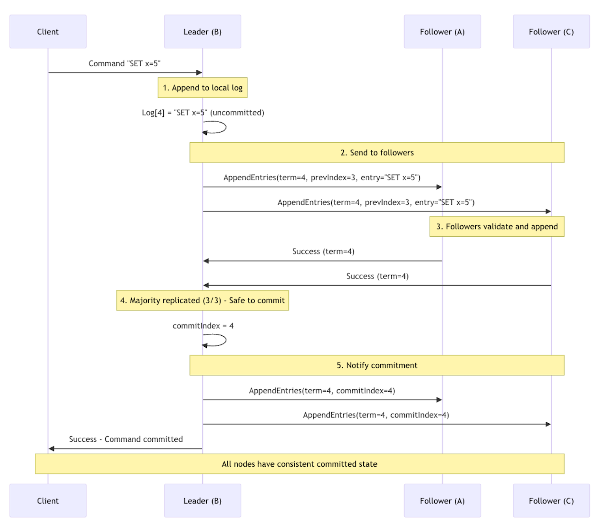
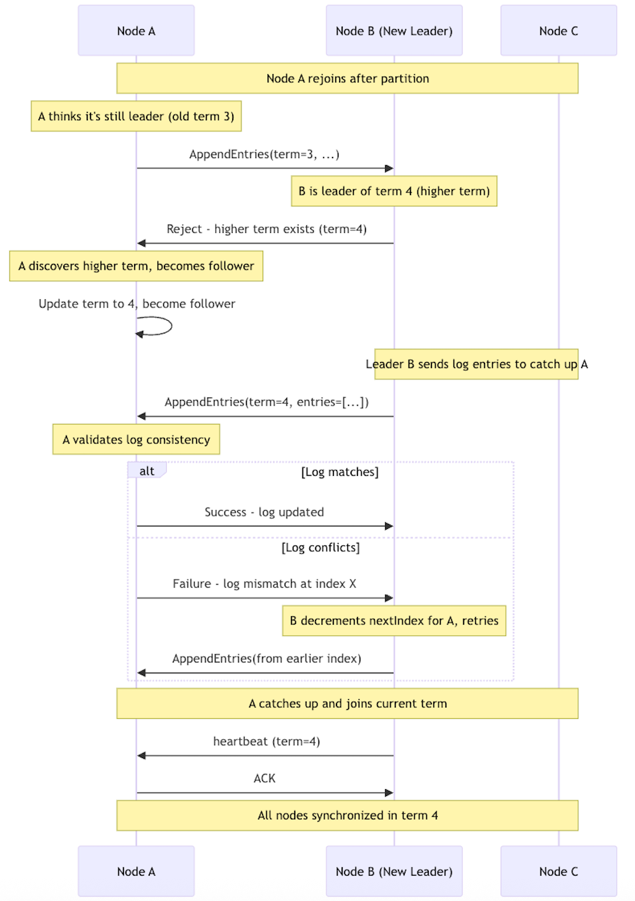

Introduction: The Problem That Keeps Engineers Up at Night
Imagine you’re building a banking system where multiple servers need to agree on account balances. Server A thinks Alice has $100, but Server B thinks she has $50 because it missed a recent transaction. When Alice tries to withdraw $75, which server is right? This is the distributed consensus problem — getting multiple independent computers to agree on a single value, even when some of them might fail or go offline.
Distributed consensus is one of the most fundamental problems in computer science because it underpins everything we take for granted in distributed systems: consistent databases, leader election in clusters, atomic transactions across multiple services, and coordinated configuration changes.
Why Consensus is Hard
The challenge isn’t just about communication — it’s about making decisions in the face of uncertainty. Networks can partition, servers can crash at any moment, and messages can be delayed or lost. Yet your system needs to maintain consistency and keep making progress. It’s like trying to organize a group decision when some people might not respond, some might be unreachable, and messages might arrive out of order.
The fundamental insight is that you can’t wait for everyone to respond (they might be down), but you also can’t make decisions unilaterally (you might be the one who’s partitioned from the group). Consensus algorithms solve this by requiring agreement from a majority of nodes, ensuring both safety (consistency) and liveness (progress).
Distributed consensus is closely related to atomic broadcast — the problem of delivering messages to all nodes in the same order. In fact, consensus and atomic broadcast are sort of interchangeable: you can implement one using the other. Most practical systems use consensus algorithms to achieve atomic broadcast (however there are implementations that position themselves deliberately as atomic broadcast such as Zookeeper’s ZAB), ensuring all replicas process operations in identical order.
What Do We Need Consensus On?
Before diving into specific algorithms, it’s important to understand what we’re actually trying to agree on. While consensus problems appear in many forms, they fundamentally boil down to two patterns: agreeing on a single value or agreeing on a sequence of values (which can be achieved by running multiple instances of single value consensus). Most practical applications are essentially usages of these core patterns.
Single Value Consensus
The simplest form is agreeing on a single value — whether it’s a simple decision, choosing a leader, or determining cluster membership. This is what basic Paxos solves — getting multiple nodes to agree on one specific value.
Examples:
- Leader election: Which node (A, B, or C) should be the leader?
- Configuration changes: Should we add node D to the cluster?
- Simple decisions: Should we enable maintenance mode (yes/no)?
- Cluster membership: Current active nodes should be {A, B, C}
- Membership changes: Safely transitioning from {A, B, C} to {A, B, C, D}
Algorithms: Basic Paxos excels here — it’s designed specifically for single-value consensus. Raft’s joint consensus and Paxos variants with membership protocols handle the more complex membership change scenarios.
Sequence Consensus (Total Order / Replicated Logs)
Most commonly, we need consensus on a sequence of values — essentially a replicated log where every node agrees on the same ordered list of operations. This is also called total order consensus since all nodes must process operations in identical order. This is the foundation of most distributed systems.
Examples:
- Database transactions:
[INSERT user Alice, UPDATE account balance, DELETE old record] - State machine replication:
[SET x=1, SET y=2, DELETE z] - Event streams:
[OrderCreated, PaymentProcessed, OrderShipped] - Blockchain: Blocks must be in the same order on all nodes
- Event sourcing: Events must be ordered consistently across all consumers
Algorithms: Multi-Paxos and Raft are designed for this — they can efficiently agree on many values in sequence while providing total ordering.
How Algorithms Match Requirements
Different consensus algorithms are optimized for different scenarios:
Basic Paxos: Perfect for single-value decisions but inefficient for sequences. You’d run separate Paxos instances for each decision.
Multi-Paxos: Optimizes Paxos for sequences by electing a stable leader who can propose multiple values without repeating the prepare phase.
Raft: Designed from the ground up for replicated logs. The strong leader model makes sequence consensus natural and efficient.
PBFT (Byzantine Paxos): Extends consensus to handle malicious nodes, crucial for blockchain and multi-organization systems.
ZAB (ZooKeeper Atomic Broadcast): Designed specifically as an atomic broadcast protocol, providing total order delivery of messages.
The State Machine Approach
Most modern distributed systems use consensus to build replicated state machines:
- Clients submit commands (SET x=5, DELETE user Alice)
- Consensus algorithm orders commands across all replicas
- Each replica applies commands in the agreed order
- All replicas end up in identical state
This pattern works whether you’re building a distributed database, configuration store, or coordination service. The consensus algorithm ensures all replicas see the same sequence of operations, while the state machine logic determines what those operations actually do.
Paxos: The Theoretical Foundation
Paxos, introduced by Leslie Lamport in 1989, was the first practical solution to distributed consensus. It’s mathematically elegant but notoriously difficult to understand and implement correctly. Despite its complexity, Paxos powers some of the world’s largest distributed systems including Google Spanner, Chubby lock service, and is used in Apache Cassandra’s lightweight transactions.
The Core Idea
Paxos works by having nodes take on different roles in a careful dance of proposals and promises. The key insight is using a two-phase protocol: first prepare the ground by getting promises from a majority (promises to ignore any future proposals with lower proposal numbers), then propose a value that respects those promises.
Paxos Roles
- Proposer: Initiates the consensus process by proposing values
- Acceptor: Votes on proposals and promises to ignore older proposals
- Learner: Learns the chosen value once consensus is reached
A single node can play multiple roles simultaneously.
Paxos Workflow
The process begins when a client sends a request to any node in the cluster (e.g., “set configuration X” or “elect leader Y”). That node becomes the proposer and initiates the two-phase consensus protocol to get all nodes to agree on the client’s proposed value.
Phase 1 — Prepare:
- Proposer generates unique proposal number N
- Sends “prepare(N)” to majority of acceptors
- Each acceptor responds with:
- Promise to ignore proposals < N
- The highest-numbered proposal it has previously accepted (if any), so the proposer knows what value to respect

Phase 2 — Accept:
- If majority responds, proposer picks a value:
- If acceptors returned previous proposals, use value from highest-numbered one
- Otherwise, use proposer’s own value
2. Sends “accept(N, value)” to majority of acceptors
3. Acceptors accept if they haven’t promised to ignore N
4. Once majority accepts, value is chosen

Paxos in Practice: Multi-Paxos
Basic Paxos is inefficient for multiple values in a row — you need to run the full protocol for every decision. Multi-Paxos optimizes this by electing a stable leader who can skip Phase 1 for subsequent proposals, making it practical for real systems.
Multi-Paxos works by having nodes agree not just on individual values, but on a sequence of values (like a replicated log). Once a leader is established, it can propose values for multiple log positions without going through the prepare phase each time. Basic Paxos can guarantee order if you run separate instances for each position in a sequence (Paxos instance 1 for log entry 1, instance 2 for entry 2, etc.), but this is inefficient since each instance requires the full two-phase protocol.
Where Paxos is Used
- Google Spanner: Uses Paxos for consistent global transactions
- Apache Cassandra: Lightweight transactions use Paxos for linearizable operations
- Google Chubby: Distributed lock service built on Paxos
- Amazon DynamoDB: Uses Paxos variants for cross-region consistency
Paxos Challenges
- Implementation complexity: Easy to get wrong, hard to debug
- Performance under contention: Multiple proposers can lead to dueling and livelock
- Understandability: Even experienced engineers struggle with edge cases
- Message overhead: Two-phase protocol requires more network round trips
Raft: Consensus for Humans
Raft was designed in 2013 with a specific goal: make distributed consensus understandable. The creators realized that Paxos’s complexity was hindering adoption and innovation in distributed systems. Raft achieves the same guarantees as Paxos but with a design that engineers can actually reason about.
The Core Idea
Raft simplifies consensus by decomposing it into three independent subproblems:
- Leader election: How to choose a coordinator
- Log replication: How the leader maintains consistency
- Safety: Ensuring the system remains consistent even during failures
The key insight is having a strong leader who coordinates all changes, eliminating the need for multiple competing proposers.
Raft Roles and States
- Leader: Handles client requests and coordinates replication
- Follower: Passively receives updates from leader
- Candidate: Seeks to become leader during election
Leader Election
When a leader fails or becomes unreachable, or when the system is starting up, Raft ensures the cluster can quickly elect a new leader. Upon startup, or when followers detect leader failure through missing heartbeats, nodes can become candidates, and request votes from other nodes. The first candidate to receive a majority of votes becomes the new leader for the next term.

Log Replication
The leader receives client requests (any node can receive requests, but followers redirect them to the leader), appends them to its local log, then replicates entries to follower logs. Only after a majority of nodes have stored the entry does the leader commit it and notify followers. This ensures strong consistency across all nodes.

Safety and Recovery
Raft’s safety mechanisms prevent data corruption when nodes rejoin after partitions. Each term has at most one leader, and nodes with outdated information are brought up to date through log consistency checks. Higher terms always override lower terms, ensuring the cluster converges to a single consistent state.

Safety Properties
Raft guarantees several key safety properties:
- Election Safety: At most one leader per term
- Leader Append-Only: Leaders never overwrite their logs
- Log Matching: Identical entries at same index across logs
- Leader Completeness: Committed entries appear in future leader logs
- State Machine Safety: Same log index = same command
Where Raft Excels
- etcd: Kubernetes’ configuration store uses Raft for consistency
- HashiCorp Consul: Service mesh coordination via Raft consensus
- CockroachDB: Uses Raft for consistent SQL across regions
- TiKV: Distributed key-value store with Raft-based replication
Raft Modifications
- Pre-vote: Prevents unnecessary elections from partitioned nodes
- Joint Consensus: Safe membership changes without losing availability
- KRaft (Kafka): Apache Kafka replacing ZooKeeper with Raft for metadata
- Multi-Raft: Running multiple independent Raft groups for horizontal scaling
Paxos vs. Raft: Choosing the Right Algorithm
Both algorithms solve the same fundamental problem but with different philosophies and trade-offs:
Client Request Handling:
- Paxos: Any node can accept client requests and act as a proposer, initiating the consensus protocol
- Raft: Only the leader accepts client requests; followers redirect clients to the current leader
Choose Paxos when you need the most general consensus solution, have high-contention scenarios with multiple proposers, or are extending existing Paxos-based systems. It’s theoretically elegant but complex to implement correctly. The ability for any node to accept requests can provide better load distribution and availability.
Choose Raft when you prioritize implementation simplicity, team understanding, and development productivity. Its strong leader model makes it natural for most distributed systems use cases like databases and configuration stores, though it creates a single point of bottleneck during normal operation.
Performance-wise, Raft typically performs better during normal operation due to strong leadership eliminating conflicts, while Paxos can handle multiple proposers but may have lower throughput due to competing proposals. The leader-only model in Raft can become a bottleneck under high load, while Paxos’s flexibility comes with coordination overhead.
Byzantine Fault Tolerance: When Nodes Can’t Be Trusted
Both Paxos and Raft assume nodes fail by crashing (fail-stop model) — they either work correctly or stop working entirely. But what if nodes can behave maliciously, sending conflicting messages or corrupting data? This is the Byzantine fault problem, named after the Byzantine Generals Problem where generals might be traitors.
When Byzantine Tolerance Matters
Byzantine fault tolerance becomes critical in:
- Blockchain networks: Where participants may be adversarial
- Multi-organization systems: When you can’t trust all participants
- Critical infrastructure: Where compromised nodes could cause catastrophic failures
- Distributed ledgers: Where financial incentives might motivate malicious behavior
Byzantine Consensus Algorithms
Byzantine consensus algorithms are designed for environments where some nodes may act maliciously or be compromised. They require more nodes and higher message complexity than crash fault-tolerant algorithms.
Traditional Byzantine Consensus (Permissioned Networks)
PBFT (Practical Byzantine Fault Tolerance) was the first practical Byzantine consensus algorithm. It requires 3f+1 total nodes to tolerate f Byzantine failures (compared to 2f+1 for crash faults) and uses a three-phase protocol with cryptographic verification. It’s used in Hyperledger Fabric (enterprise blockchain platform), BFT-SMaRt library (Java Byzantine replication framework), and academic research systems.
Modern improvements:
- HotStuff: Provides linear message complexity and better performance than PBFT. Used in Facebook’s Diem project (discontinued cryptocurrency) and some enterprise platforms.
- Tendermint: PBFT-inspired with immediate finality, optimized for blockchain use cases. Powers Cosmos Hub (interchain protocol), Terra (stablecoin ecosystem), Binance Chain (cryptocurrency exchange blockchain), and many Cosmos SDK blockchains.
- Istanbul BFT: Ethereum-compatible variant used in private Ethereum networks and some enterprise blockchain platforms.
Blockchain Consensus (Permissionless Networks)
Permissionless networks face additional challenges since anyone can join, requiring different approaches:
- Longest Chain Rule (Bitcoin): Simple consensus where the longest valid chain wins, using Proof of Work for Sybil resistance and leader selection
- Gasper (Ethereum 2.0): Combines Casper FFG and LMD GHOST protocols, using Proof of Stake for validator selection and economic security
The Cost of Byzantine Tolerance
Byzantine algorithms come with significant overhead:
- More nodes required: 3f+1 vs 2f+1 for crash fault tolerance
- Higher message complexity: Nodes must verify each other’s behavior
- Cryptographic overhead: Digital signatures and verification add latency
- Implementation complexity: Much harder to implement correctly than crash fault algorithms
For most traditional distributed systems, the cost of Byzantine tolerance outweighs the benefits since nodes are typically within the same trust boundary (same company, data center, etc.).
The Future of Consensus
Modern distributed systems are pushing consensus algorithms in new directions:
Flexible Consensus: Protocols that can adapt their consistency guarantees based on application needs (EPaxos, PBFT variants).
Blockchain Integration: Adapting classical consensus for cryptocurrency and smart contract platforms.
Geo-Distributed Systems: Handling consensus across multiple data centers with varying network conditions.
The fundamental problem of distributed consensus remains as relevant as ever. As we build increasingly complex distributed systems — from microservices architectures to planet-scale databases — understanding these algorithms becomes essential for any engineer working with distributed systems.
The choice between Paxos and Raft often comes down to your team’s priorities: theoretical rigor versus practical implementation, flexibility versus simplicity, academic elegance versus engineering productivity. Both have their place in the distributed systems toolkit, and understanding both makes you a better distributed systems engineer.